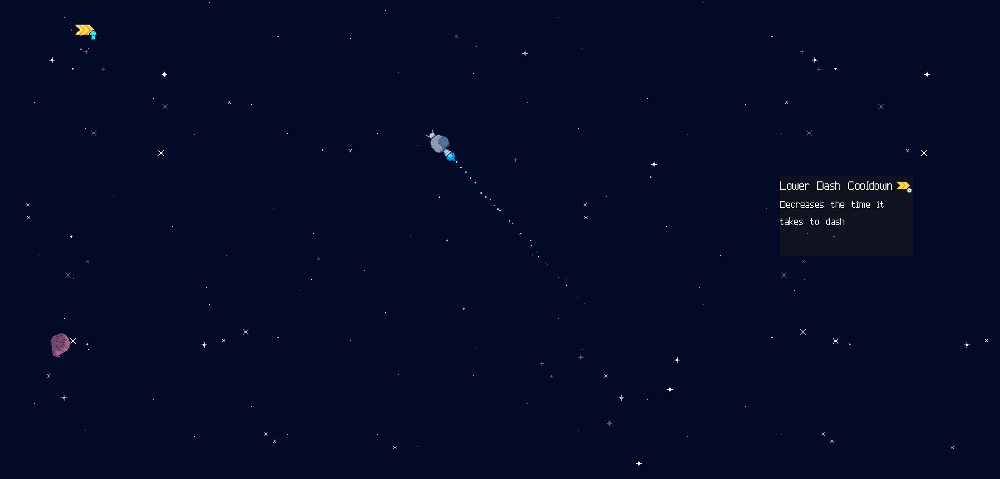

Snail Space is an endless arcade-style game where you control a snail spaceship while destroying asteroids and enemy robot snails

Development Time: 2 daysTeam Size: 7Game Engine: Godot
My Involvement
Role: Programmer
Things I did:
- Implemented Main Menu
- Implemented powerups
- Implemented game over screen with score analytics
Retrospective
For my first time using the Godot engine, I would say this project turned out very successful.
The game had a simple concept of avoiding astroids in space with a snail space ship, so I focused on adding juice and making the mechanics satisfying to interact with. Although I mainly worked on the user interface, I gained valuable insights into how the Godot engine works and the fundamental mechanics I’ll use in future projects.